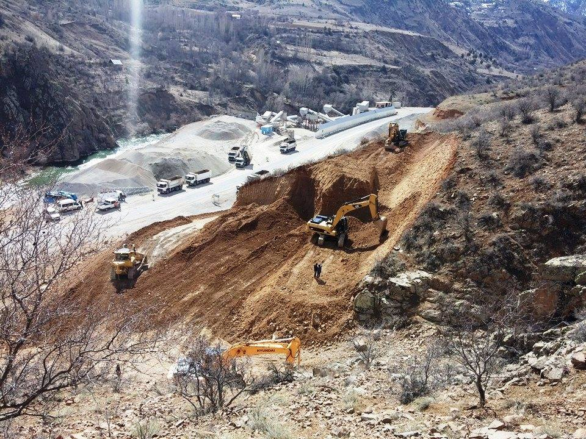

C30 beton, 28 günlük karakteristik silindir basınç dayanımı 30 MPa (300 kg/cm²) olan yüksek dayanımlı beton sınıfıdır. Deprem kuşağında yer alan ve sert kış koşullarına sahip Erzurum'da, çok katlı yapılar, köprüler ve endüstriyel tesisler için güvenle tercih edilir.
C30 Beton Nedir?
C30 beton, TS EN 206 standardında yüksek dayanımlı betonlar sınıfına girer. C25'e göre %20 daha fazla basınç dayanımı sunar. Erzurum gibi 2. derece deprem bölgesinde, 5 kat ve üzeri binaların taşıyıcı sistemleri (kolon, perde, kiriş, radye temel) için asgari C30 beton önerilmektedir.
C30 Beton Özellikleri
- Yüksek basınç dayanımı (30 MPa) – Ağır yükler ve deprem kuvvetlerine karşı üstün direnç.
- Düşük su/çimento oranı (≤0.50) – Daha yoğun yapı, daha az geçirimlilik.
- Donma-çözülme direnci – Erzurum kışına uygun, uzun ömürlü.
- Yüksek elastisite modülü (~32 GPa) – Deformasyonlara karşı rijit davranış.
- Kimyasal dayanıklılık – Sülfat ve klorür etkisine karşı koruma.
C30 Beton Nerelerde Kullanılır?
- Çok katlı konut ve iş merkezleri (5+ kat)
- Deprem bölgelerindeki taşıyıcı sistemler
- Köprü, viyadük, tünel gibi ulaşım yapıları
- Endüstriyel tesisler, fabrika zeminleri
- Su yapıları (baraj, regülatör, arıtma tesisi)
- Radye temel ve fore kazık uygulamaları
👉 Erzurum'da özellikle kentsel dönüşüm kapsamındaki yüksek katlı projelerde C30 beton zorunluluk haline gelmiştir.
C25 – C30 – C35 Beton Karşılaştırması
| Özellik | C25 Beton | C30 Beton | C35 Beton |
|---|---|---|---|
| Basınç Dayanımı (28 gün) | 25 MPa | 30 MPa | 35 MPa |
| Kullanım Alanı | Az katlı konut | Yüksek katlı, deprem bölgesi | Endüstriyel, özel projeler |
| Maliyet Seviyesi | Orta | Yüksek | Çok yüksek |
| Erzurum'da Öneri | 1-4 katlı yapılar | 5+ katlı, taşıyıcı sistemler | Köprü, viyadük, özel yapılar |
👉 C30 beton, yüksek katlı yapılar ve deprem güvenliği için optimum seçimdir.
Erzurum'da C30 Beton Neden Tercih Edilir?
- ❄️ Donma-çözülme döngülerine dayanıklıdır – Erzurum'da yılda 100+ don-çözülme yaşanır, C30 beton bu döngülere karşı yüksek direnç gösterir.
- 🏢 Deprem yönetmeliğine uygundur – TBDY 2018'e göre yüksek binalarda C30 şarttır.
- 🧊 Düşük geçirimlilik – Kar suları ve yeraltı suyuna karşı koruma sağlar.
- 📏 Uzun ömürlü yapılar – Bakım maliyetlerini düşürür.
C30 Beton Avantajları ve Dezavantajları
| Avantajlar | Dezavantajlar |
|---|---|
| Yüksek dayanım, deprem güvenliği | C25'e göre %15-20 daha maliyetlidir |
| Don ve kimyasallara dayanıklı | Küçük projeler için gereksiz olabilir |
| Uzun yapı ömrü | Döküm sonrası kür süresi daha kritiktir |
| Yüksek katlı projelerde zorunlu | Özel katkı gerektirebilir |
C30 Beton Fiyatları Erzurum 2026
C30 beton fiyatları; metreküp miktarı, şantiye konumu, pompa kullanımı ve katkı taleplerine göre belirlenir. C25'e göre daha yüksek maliyetlidir ancak sağladığı güvenlik ve dayanıklılık, uzun vadede avantaj sağlar. Güncel fiyat teklifi ve toplu alım avantajları için doğrudan iletişime geçin.
📞 Erzurum'da C30 Beton Hizmeti
Yüksek katlı projeleriniz için kaliteli C30 beton tedariği. Ücretsiz keşif ve fiyat teklifi alın.
✅ Yüksek dayanım + deprem güvenliği + profesyonel ekip
Sık Sorulan Sorular
C30 beton depreme dayanıklı mı?
Evet, TBDY 2018'e göre yüksek katlı yapılar için önerilen asgari beton sınıfıdır.
C30 beton kaç günde dayanım kazanır?
7 günde yaklaşık %70, 28 günde tam dayanıma ulaşır.
C30 beton kışın dökülür mü?
Evet, antifriz katkı ve ısı yalıtımı ile Erzurum'da kışın da dökülebilir.
C30 yerine C25 kullanılabilir mi?
Statik projeye bağlıdır; yüksek katlı ve deprem bölgelerinde C25 yetersiz kalır.